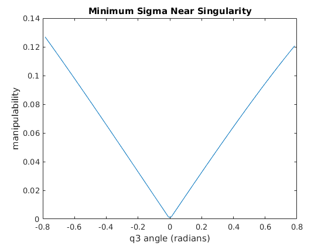
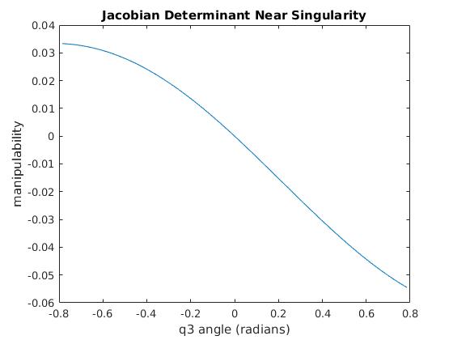
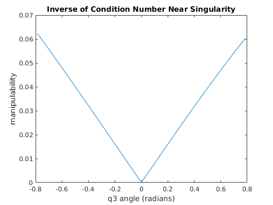

Contents
Setup
clear
clc
close all
rosshutdown
rosinit
ur5 = ur5_interface();
tf_frame('base_link', 'base', [ROTZ(pi/2) [0 0 0.0892]'; 0 0 0 0]);
pause(1)
Shutting down global node /matlab_global_node_88464 with NodeURI http://david-MSI-Desktop:36653/
The value of the ROS_MASTER_URI environment variable, http://localhost:11311, will be used to connect to the ROS master.
Initializing global node /matlab_global_node_63998 with NodeURI http://david-MSI-Desktop:42983/
Shutting down global node /matlab_global_node_63998 with NodeURI http://david-MSI-Desktop:42983/
The value of the ROS_MASTER_URI environment variable, http://localhost:11311, will be used to connect to the ROS master.
Initializing global node /matlab_global_node_30715 with NodeURI http://david-MSI-Desktop:33987/
Part 3 a) Forward Kinematic Map Verification
fprintf('\n\nBeginning testing of ur5FwdKin() function:\n')
for i = 1:4
while true
q = [rand(1,6)*2*pi - pi]';
q(2) = -rand * pi;
g = ur5FwdKin(q - ur5.home);
if g(3,4) > 0.1
break
end
end
fwdKinToolFrame = tf_frame('base','fwdKinToolFrame',eye(4));
fwdKinToolFrame.move_frame('base',g);
ur5.move_joints(q, 7);
pause(7.1)
err = norm(ur5.get_current_transformation('base','ee_link') - g);
fprintf('\terror between current position and forward map is %d\n', err);
end
fprintf('Finished testing of ur5FwdKin() function.\n\n')
Beginning testing of ur5FwdKin() function:
error between current position and forward map is 4.753129e-04
error between current position and forward map is 4.318107e-04
error between current position and forward map is 2.887373e-04
error between current position and forward map is 4.099708e-04
Finished testing of ur5FwdKin() function.
Part 3 b) Body Jacobian Verification
fprintf('Beginning testing of ur5BodyJacobian() function:\n')
for i = 1:10
q = [rand(1,6)*2*pi - pi]';
g = ur5FwdKin(q);
J = ur5BodyJacobian(q);
Japprox = zeros(6,6);
e = eye(6);
for i = 1:6
ei = e(:,i);
dgdq_i = 1/2/epsilon * ( ur5FwdKin(q + epsilon*ei) - ur5FwdKin(q - epsilon*ei) );
xi_hat = rigid_inverse(g)*dgdq_i;
Japprox(:,i) = vee(xi_hat);
end
err = norm(J - Japprox);
fprintf('\terror between Jacobian and central difference approximation is %d\n', err);
end
fprintf('Finished testing of ur5BodyJacobian() function.\n\n')
Beginning testing of ur5BodyJacobian() function:
error between Jacobian and central difference approximation is 2.559420e-06
error between Jacobian and central difference approximation is 5.275562e-06
error between Jacobian and central difference approximation is 2.000121e-06
error between Jacobian and central difference approximation is 3.264981e-06
error between Jacobian and central difference approximation is 1.955514e-06
error between Jacobian and central difference approximation is 2.977764e-06
error between Jacobian and central difference approximation is 3.819921e-06
error between Jacobian and central difference approximation is 4.913408e-06
error between Jacobian and central difference approximation is 3.514969e-06
error between Jacobian and central difference approximation is 2.115468e-06
Finished testing of ur5BodyJacobian() function.
Part 3 c) Manipulability Measure Verification
while true
q = [rand(1,6)*2*pi - pi]';
if manipulability(ur5BodyJacobian(q), 'invcond') > 0.01
break
end
end
q(3) = 0;
pts = 100;
sigmamin = zeros(pts,1);
detjac = zeros(pts,1);
invcond = zeros(pts,1);
i = 1;
theta = -pi/4:pi/2/(pts-1):pi/4;
for q3 = theta
q(3) = q3;
sigmamin(i) = manipulability(ur5BodyJacobian(q), 'sigmamin');
detjac(i) = manipulability(ur5BodyJacobian(q), 'detjac');
invcond(i) = manipulability(ur5BodyJacobian(q), 'invcond');
i = i + 1;
end
figure
plot(theta, sigmamin)
title('Minimum Sigma Near Singularity')
xlabel('q3 angle (radians)')
ylabel('manipulability')
figure
plot(theta, detjac)
title('Jacobian Determinant Near Singularity')
xlabel('q3 angle (radians)')
ylabel('manipulability')
figure
plot(theta, invcond)
title('Inverse of Condition Number Near Singularity')
xlabel('q3 angle (radians)')
ylabel('manipulability')
  
Part 3 d) Twist from g Transform Verification
fprintf('Beginning testing of getXi() function:\n')
for i = 1:24
xi = [( rand(3,1)-0.5 ) * 2; ( rand(3,1)-0.5 ) * 2*pi];
if mod(i,3) == 0 xi(1:3) = 0; end
if mod(i,3) == 1 xi(4:6) = 0; end
g = expm(wedge(xi));
xi_comp = getXi(g);
colinear = norm(proj(xi, xi_comp) - xi_comp);
same_dir = dot(proj(xi, xi_comp), xi) > 0;
if same_dir
angle_diff = norm(xi) - norm(xi_comp);
else
angle_diff = 2*pi - norm(xi) - norm(xi_comp);
end
if colinear > epsilon
warning('Returned non-colinear twist')
elseif angle_diff > epsilon
warning('different twist angle returned.')
end
fprintf('\terror between input and computed twist is %d\n', max(colinear,angle_diff));
end
fprintf('\nthe instances where err is large are caused by the rotations occuring around axes rotated by 180 degrees.\n')
fprintf('I account for this with planer and pure rotation, but haven''t figured out how to do so for general twists\n\n')
fprintf('Finished testing of getXi() function\n\n')
Beginning testing of getXi() function:
error between input and computed twist is 2.775558e-17
Warning: Returned non-colinear twist
error between input and computed twist is 1.290590e+00
error between input and computed twist is 1.332268e-15
error between input and computed twist is 0
Warning: Returned non-colinear twist
error between input and computed twist is 4.648989e-01
error between input and computed twist is 2.220446e-15
error between input and computed twist is 0
error between input and computed twist is 4.422836e-15
error between input and computed twist is 4.440892e-16
error between input and computed twist is 0
error between input and computed twist is 1.387779e-16
error between input and computed twist is 1.190159e-13
error between input and computed twist is 0
error between input and computed twist is 7.791361e-16
error between input and computed twist is 4.965068e-16
error between input and computed twist is 0
Warning: Returned non-colinear twist
error between input and computed twist is 3.994852e-01
error between input and computed twist is 1.110223e-15
error between input and computed twist is 0
error between input and computed twist is 1.776357e-15
error between input and computed twist is 2.719480e-16
error between input and computed twist is 1.110223e-16
error between input and computed twist is 3.390841e-16
error between input and computed twist is 2.155663e-15
the instances where err is large are caused by the rotations occuring around axes rotated by 180 degrees.
I account for this with planer and pure rotation, but haven't figured out how to do so for general twists
Finished testing of getXi() function
Part 3 e) Resolved Rate Controller Test Validation
fprintf('Beginning testing of ur5RRcontrol() function.\n')
K = 0.1;
while true
fprintf('\tAttempting RR control\n')
if manipulability(ur5BodyJacobian(force_get_current_joints(ur5) - ur5.home), 'invcond') < 0.01
ur5.move_joints(ur5.home + rand(6,1), 5)
while true
jstart = rand(6,1)*2*pi - pi;
gs = ur5FwdKin(jstart);
if gs(3,4) > 0.1 & sqrt(gs(2,4)^2 + gs(1,4)^2) > 0.1 & ...
manipulability(ur5BodyJacobian(jstart), 'invcond') > 0.01
break
end
end
pause(5)
end
while true
jfinal = rand(6,1)*2*pi - pi;
jfinal(2) = -rand*pi;
gf = ur5FwdKin(jfinal);
if gf(3,4) > 0.1 & sqrt(gf(2,4)^2 + gf(1,4)^2) > 0.3 & ...
manipulability(ur5BodyJacobian(jfinal), 'invcond') > 0.01
break
end
end
Frame_goal = tf_frame('base', 'Goal', gf);
pause(0.3)
finalerr = ur5RRcontrol(gf, K, ur5);
if finalerr ~= -1
fprintf('final distance to goal: %0.2f cm\n', finalerr);
break
else
fprintf('encountered singularity on trajectory. Retrying\n')
pause(5)
end
end
fprintf('\n\tAttempting controller while starting at a singularity\n')
jstart = ur5.home;
ur5.move_joints(jstart, 5)
pause(5.1)
jfinal = rand(6,1)*2*pi - pi;
gf = ur5FwdKin(jfinal);
ur5RRcontrol(gf, K, ur5);
fprintf('Finished testing of ur5RRcontrol() function\n\n')
Beginning testing of ur5RRcontrol() function.
Attempting RR control
final distance to goal: 0.96 cm
Attempting controller while starting at a singularity
Warning: UR5 is near a singularity. Resetting ur5 position and exiting
RRcontroller.
Finished testing of ur5RRcontrol() function